|
|
2012: Adeus Vovô Geovany e o Novo Comerciante de Vinhos |
|
Benvindo ao nosso blog anual de final de ano para 2012. Ele também está disponível em Ingles. Se você quiser ler edições anteriores você pode encontrá-las aqui
Depois de passar os feriados de Natal e Ano Novo em Oklahoma nós estávamos de volta em Edmonton para a nossa traditional festa de Natal-depois-do-Natal em Janeiro de 2012. Este ano os convidados incluíram alguns dos melhores amigos do Daniel: os gêmeos alemães Deniz e Sinan, o descendente de gregos Alexander N, e o meio-norueguês Sander, junto com os familiares e pais. A casa estava cheia de risadas, brindadeiras e diversões. Nada diz ``Natal'' como uma casa muito barulhenta cheia de crianças e dos aromas de um típico jantar de Natal. Nós também estávamos muito felizes com a presença da Fran, nossa grande amiga que estava nesta festa provavelmete pela última vez pois ela mudou-se para a Austrália em março.
No's mergulhamos diretamente de volta na temporada de
hockey do Daniel que durou até o final de
março. Não só o Daniel estava tendo
treinos e jogos duas vezes por semana, mas ele também
tinha treinamento adicional de "patinação forte" e, dado que eu tenho um
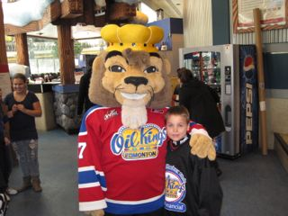
passe VIP para todos os jogos como senador da Universidade
de Alberta, eu e o Daniel também assitimos a quase todos os
jogos do time de hockey dos University of Alberta Golden
Bears. O Daniel conhece alguns dos jogadores pessoalmente pois muitos
deles tinham sido treinadores nas colônias de férias de
hockey que o Daniel tinha feito no verão. Nós
também fomos assistir jogos do Oil Kings no estacio
chamado Rexall Place, que é o estadio do famoso time de
hockey Oilers. Uma vez com o time Silver Bullets do Daniel, e
outras vezes com o grande amigo do Daniel, Denis C. Nós
vimos o jogo final do Campeonato de Hockey do Oeste onde os
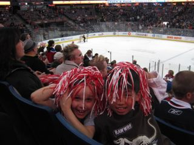
Kings ganharam a copa. Durante a temporada de hockey, o Daniel
evoluiu de um dos jogadores menos abilidosos no início da temporada
para um dos melhores jogadores do time no final de
março. No final de março o Daniel recebeu um
convite de última hora para jogar para o time Júnior dos
Golden Bears da Universidade de Alberta durante a
primavera. Nós aceitamos a oportunidade e assim
estendemos a temporada de hockey até o final de
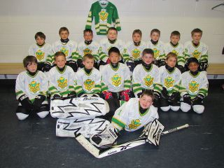
Junho. As vezes nós tinhamos quatro treinos no mesmo
final de semana. O último torneio de hockey dos
Jr. Golden Bears foi em Calgary e nós aproveitamos para
visitar com a Emily, a irmã do Daniel. Conciliar hockey
com os jogos de futebol da primavera foi um desafio nos
calendários e para os dois pais, mas valeu a pena. O
Daniel teve muito sucesso nos dois esportes.
O time de futebol de primavera do Daniel foi formado principalmente pelos amigos dele do segundo ano da escola. Na primeira metade do campeonato eles não sofreram nenhum gol. A medida que eles avançaram eles foram reclassificados para divisões superiores mas eles continuaram dominando os jogos. Eles terminaram o campeonato no final de Junho como os campeões invictos para a divisão da cidade em que eles jogaram. Foi fantástico pois o time de hockey dele tinha perdido quase todos os jogos. Portanto, foi um excelente balanço e nós vimos o Daniel desenvolver uma atitude muito mais positiva tanto como um ganhador como um perdedor de um jogo.
|
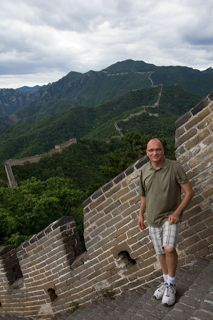 |
Todo este investimento em atividades de esportes acabou sendo uma decisão muito acertada. A auto-confiança que o Daniel ganhou no esporte ajudou ele muito na escola. O Daniel sofre academicamente por causa do TDA e das deficiências de aprendizado. Antes do sucesso dele nos esportes as dificuldades acadêmicas estavam afetando a auto-estima dele. Mas o sucesso no esporte deu a ele uma ótima auto-confiança e aumentou significantemente o progresso acadêmico dele e melhorou as relações dele na escola. Por exemplo, quando a turma do segundo ano foi fazer patinação no gelo, o Daniel era um dos melhores patinadores e foi admirado por todos os colegas e professoras. As minhas viagens da primavera me levaram a Boston e a Tallin na Estonia. Eu fui muito positivamente surpreendido com Boston, uma grande cidade e Tallin é uma antiga capital européia relativamente pequena mas muito charmosa com um centro antigo e muitos edifícios modernos. Achei a cidade muito mais escandinávia do que eu esperava antes de ir la. No meu retorno de Tallin eu consegui jantar com a minha amiga Silvia em Amsterdam e bater um papo com ela. Depois, no verão, eu fui para Beijing para a minha primeira visita a China. Eu fiquei em um hotel muito próximo ao estádio olímpico Bird Nest e também visitei a Tiannamen Square, a cidade proibida, e um segmento da grande muralha. Foi uma das viagens mais interessantes que eu fiz por um longo tempo. Uma palestra que eu dei numa conferência em Beijing foi muito bem recebida. Na primavera nós ficamos tristes por ter que dizer tchau para nossa grande amiga Fran Moore que deixou Edmonton para seguir o marido para a Australia. |
Na primavera eu recebi a honra de ser convidado para ser o orador no banquete de formatura da turma de Ciências da Computação da Universidade de Alberta. Este sendo o aninversário de 100 anos do nascimento do Alan Turing, e eu sendo o único professor abertamente gay do departamento, eu fiz o discurso sobre a vida pessoal e as contribuições pra a Ciência de Alan Turing. O Turing é hoje considerado o pai da Ciência da Computação. Ele fez muitas contribuições para Ciências e teve um papel decisivo na segunda guerra mundial. Mas ele também foi perseguido por ser gay, sujeitado a castração química pelos tribunais Britanicos, e cometeu suicídio antes do seu aninversário de 44 anos. Muito provavelmente o Turing também sofreu de Sindrome de Asperger. Eu fiz o discurso sobre a necessidade de aceitação de pessoas que são diferentes. O discurso foi muito bem recebido e foi considerado, pelos meus colegas mais velhos que estavam lá, um dos melhores discursos de formatura já feitos.
Em julho nós tivemos nossa versão de ``férias da família''. Eu deixei o Daniel em Dallas para ele ir passar uns dez dias com os avós em Oklahoma brincando com os primos e amigos americanos e aproveitando atividades de verão. O Scott foi fazer caminhadas e acampar nas montanhas em Alberta. Eu segui para Madrid onde eu era o chefe do comitê de programa para uma conferência internacional. Desta vez eu aluguei um apartamento no centro de Madrid no lugar de ficar em um hotel e esta foi uma excelente esperiência. Madrid foi ótima apesar de todos os protestos contra as medidas austeras e apesar do fato de um mão leve ter levado todos os meus cartões de crédito.
Os avós do Daniel levaram ele de volta para Edmonton em tempo para nós fazermos as duas festas tradicionais para celebrar o aninversário dele. Para a festa para as crianças este ano nós trouxemos de volta a idéia da loja da Vovó e dos Dólares do Daniel, o que foi um grande sucesso agora que todas as crianças estão grandes o suficiente para gerenciar o dinheiro deles. A vovó Juana teve algumas ótimas idéias para jogos que fizeram a festa super divertida e o Timur, o treinador de muito sucesso do time de futebol da primavera do Daniel, organizou um jogo de futebol durante a festa, que foi muito divertido mas perturbado por uma nuvem dos mosquitos tamanho gigante que são exclusivos dos verões de Edmonton.
Depois de procurar por muitos anos, em Junho o Scott encountrou uma loja de vinhos e licores que era adequada a comprar para que ele pudesse continuar com o projeto de ser dono de uma loja de vinhos. Nós fizemos a decisão de comprar a loja e escolhemos o final de agosto, depois de nossa viagem para o Brasil, para tomar a posse. O nome Ashton's Liquor é o nome do filho do proprietário anterior. A loja estava indo muito bem principalmente com a venda de destilados e cerveja antes do Scott se tornar o dono em Setembro. O Scott tem muito conhecimento sobre vinhos porque ele tem estudado vinhos por muitos anos. Agora ele está fazendo o terceiro nível do curso de treinamento de Sommelier, o que involve oito horas de aulas de degustação de vinhos todos os domingos por seis meses. Até agora a abordagem do Scott para promover vinhos está dando muito certo. O pessoal tem comentado muito bem sobre a qualidade dos vinhos que ele está trazendo para a loja, e ele está focando num ponto de preço razoável (menos de Ca$ 20/25 por garrafa). Ele ficou surpreso com o volume de vendas de vinhos de preço mais elevado nas semanas antes do Natal. A vida de um pequeno comerciante é super ocupada e a nossa vida em família mudou significativamente. Mas tem sido muito bom ver o Scott muito feliz com esta nova empreitada.
Em agosto, depois das celebrações do aninversário do Daniel, nós fomos para o Brasil 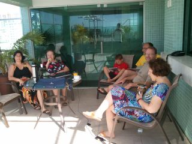 para férias com minha família. Desta vez nós voamos para a casa do meu irmão Marco em Brasília e de lá nós tiramos férias com minha família imediata em João Pessoa na Paraíba. Todos aproveitaram muito. Nós 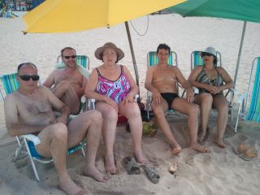 ficamos em três lugares diferentes por uma semana, e todo mundo estava feliz e relaxado. Depois de João Pessoa, o Daniel, o Scott e eu fizemos uma viagem especial para Cuiabá para ir visitar nossos amigos João e Otávio na Chapada dos Guimarães. Nós tínhamos planejado a viagem a quase um ano e o nosso principal objectivo era para reconectar com o João que o Scott não havia visto por 18 anos (eu vi o João no ano anterior quando eu fui a Brasília). Infelizmente o João decidiu ficar em São Paulo na última hora e frustrou nossos esforços para reconectar com ele. Apesar disto nós tivemos uma excelente visita com o Otávio, desfrutamos de sua grande hospitalidade, e conhecemos um pouquinho da Chapada dos Guimarães que é uma bela localização uma hora de distância de Cuiabá.
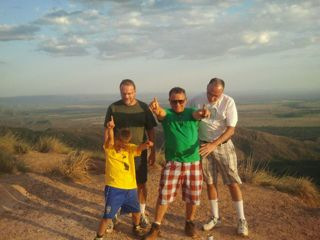 Depois do final de semana em Cuiabá nós retornamos para Brasília para passar alguns dias mais tranquilos com a minha mãe, meu padrasto Geovany, meu irmão Marco e a esposa dele, Fernanda. Um dia depois que nós chegarmos em Brasília o Scott teve um coágulo de sangue na Safena e teve que ser internado no hospital por três dias por precaução. Portanto o Daniel e eu passamos o resto de nossas férias fazendo visitas para o Daddy no hospital todos os dias. Apesar disto nós tivemos uma boa estadia e passamos algum tempo com o Vovô Geovany todas as tardes. O Geovany não estava muito forte, mas ele quiz muito ir no hospital para visitar o Scott e ver que ele estava bem e ele também gostou de ir ver o Daniel jogar futebol com o time do condomínio de casas onde o Marco mora. Apenas umas duas semanas depois que nós retornamos do Brasil, o Geovany teve um derrame e morreu. Nós nos achamos muito privilegiados 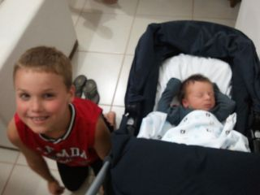 por termos tido a oportunidade de passar horas felizes com ele no que acabaram sendo as últimas semanas da vida dele. O Geovany sempre teve muita afei&ccdeil;ão por mim e sempre demonstrou gostar muito do Scott e do Daniel.
Um grande bonus de nossa visita a Brasília foi que o primeiro neto do meu irmão, Gael, nasceu enquanto nó estávamos lá e nós pudemos visitar com o Tiago, a Tatiana, e o Gael.
A liga de hockey do Daniel tem um sistema muito estruturado de avaliação que dura um mês para colocar os jogadores em diferentes levels. Esta avaliação inclui habilidade para patinar e inteligência sobre o jogo. Tem oito níveis com os melhores jogadores no nível #1. No ano passado o Daniel estava num time de nível #8. Este ano, depois da avaliação, ele foi colocado em um time de nível #3. O nível de técnica neste time é muito mais alto e os pais eram quase todos jogadores em bom nível quando eles eram mais jovens. Eles incentivam muito os filhos e levam muito a sério qualquer coisa relacionada com o hockey. O Scott e eu somos os diferentes neste grupo porque nós não temos hockey no nosso DNA.
| 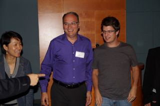 |
Em setembro eu fui para uma conferência internacional em Minneapolis onde um dos nossos artigos, que resultou de uma colaboração de pesuisa de um dos meus alunos com um time da IBM, tinha sido selecionado para finalista para o prêmio de melhor paper. Este trabalho foi feito com o computador Blue Gene/Q da IBM, o computador mais rápido do mundo neste ano. Não apenas nós recebemos o prêmio de melhor artigo, mas o meu aluno, Matthew Gaudet, também recebeu a medalha de ouro (o melhor prêmio) numa competição para trabalho de pesquisa por alunos da Association for Computing Machinery (ACM). Nós ficamos todos muito felizes com os prêmios. |
|
Em novembro, quando eu fui para a Conferência do Centro de Estudos Avançados da IBM em Markham em Ontário eu fui surpreendido por ter sido selecionado para receber o prêmio de Professor do Ano pelo Centro de Estudos Avançados da IBM no Canada. Claro que eu fiquei muito feliz com o reconhecimento do trabalho feito pelos meus alunos nesta relação muito frutífera com a IBM. Uma grande mudança neste ano perto da nossa casa foi a chegada de um grande grupo de alunos de graduação do Brasil no programa de Ciências Sem Fronteiras. Nós começamos a interagir com alguns deles assim que eles chegaram. Tem quase cinquenta alunos e a maioria está morando no edifício residencial para alunos do outro lado da rua de nossa casa. Nós ficamos muito próximos de alguns deles. Em Setembro nós convidamos um grande grupo para uma festa de boas vindas na nossa casa e preparamos comida típica brasileira incluindo feijão e arroz. Eu gostaria de ter mais tempo para interagir mais com mais alunos do grupo. É um excelente grupo de estudantes. Eles também fizeram nossa vida muito mais fácil pois podemos contar com alguns deles para cuidar do Daniel nas ocasiões em que o Scott tem que estar na loja e eu tenho que estar em outro lugar. Eu sei que nós vamos ter saudades deste grupo quando eles retornarem para o Brasil no verão. |
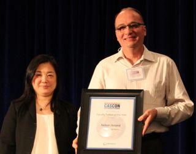 |
Em casa nós temos tentado ajudar a nossa vizinha Dorothy com as necessidades rotineiras de viver em uma casa. Ela está com 80 anos e mora sozinha. Tem sido difícil ver ela progressivamente ficar menos capaz de fazer atividades rotineiras. Ela agora decidiu ir morar numa residência com assitência para idosos. A mudança dela vai afetar a vida em torno de nossa casa pois nós gostamos muito da amizade e da proximidade dela nos últimos doze anos.
| 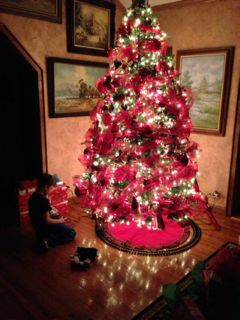 |
Na universidade eu estava extremamente ocupado durante o semestre do Outono pois eu decidi lecionar todos os meus cursos neste semestre para poder ter mais flexibilidade para pesquisa e viagens nos semestres do Inverno e da Primavera. Além de ensinar, fazer pesquisa, e orientar alunos, eu tenho estado muito involvido com a governância da universidade como membro do Conselho Geral das Faculdades e membro do Senado da Universidade. No nível do departamento eu estou liderando a criação de um programa conjunto e pós graduaçãao com a Unicamp no Brasil. Apesar destes papéis consumirem tempo, eles me permitem conhecer um group maior de pessoas que suportam a universidade. O Daniel e eu estamos agora no avião indo para Oklahoma. Este é o segundo dia que nós tentamos voar e de novo tivemos um atraso de três horas por causa de falhas mecânicas. Esta viagem tem sido muito frustrante, mas a gente esta encarando ela bem. Nós estamos antecipando vários dias mais relaxados na casa dos pais do Scott. O Scott não vai poder se reunir conosco porque este é o primeiro ano da loja e a esposa de um dos principais empregados está tendo um bebê perto do Natal. Portanto, o Scott tem que ficar em Edmonton para garantir que a loja se manterá aberta durante os feriados. |
Nós esperamos que você tenha ótimos feriados com a sua família e amigos.
Nelson, Scott & Daniel{kind=link}
{kind=link}
{kind=link}
{kind=link}
{kind=link}
{kind=link}
{kind=link}
{kind=link}
{kind=link}
{kind=link}
{kind=link}
{kind=link}
{kind=link}